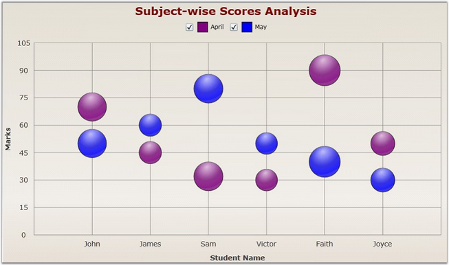

Bubble Chart is an extension of the Scatter Chart (or XY Chart) where each data marker is represented by a circle whose dimension forms a third variable. Consequently, bubble charts allow three-variable comparisons, allowing for easy visualization of complex interdependencies that are not apparent in two-variable charts. Bubble charts are frequently used in market and product comparison studies.
The following attached properties can be used to customize the Bubble chart.
|
Attached Property |
Type |
Description |
|
MinRadius |
Double |
Set the minimum radius value for the Bubble chart. |
|
MaxRadius |
Double |
Set the maximum radius value for the Bubble chart. |
The following code example illustrates how to create a Bubble Chart.
|
[XAML]
<syncfusion:ChartSeries Type="Bubble" Label="April" Interior="Purple" DataSource="{StaticResource data1}" BindingPathX="Name" BindingPathsY="Mark1, Total" StrokeThickness="1" />
<syncfusion:ChartSeries Type="Bubble" Label="May" Interior="Blue" DataSource="{StaticResource data2}" BindingPathX="Name" BindingPathsY="Mark1, Total" StrokeThickness="1" /> |
|
[C#]
ChartArea area = new ChartArea();
// Create Bubble Chart. ChartSeries series = new ChartSeries(); series.Type = ChartTypes.Bubble; ChartSeries series2 = new ChartSeries(); series2.Type = ChartTypes.Bubble;
series.DataSource = this.Resources["data"] as MarkList; series.BindingPathX = "Name"; series.BindingPathsY = new List<string>() { "Mark1", "Total" };
series.DataSource = this.Resources[data1] as MarkList; series.BindingPathX = "Name"; series.BindingPathsY = new List<string>() { "Mark1", "Total" }; area.Series.Add(series); area.Series.Add(series2); |

Figure 37: Bubble Chart